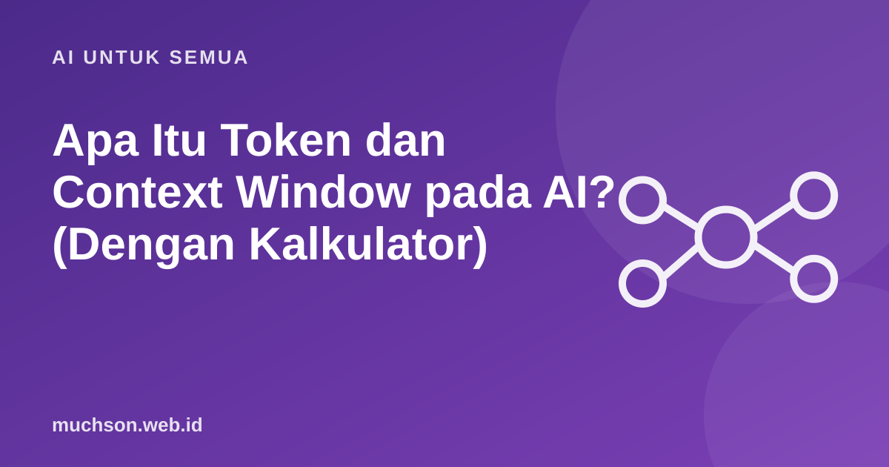

Apa Itu Token dan Context Window pada AI? (Dengan Kalkulator)
Anda mungkin pernah melihat istilah "batas token" atau "jendela konteks" saat memakai asisten AI. Keduanya menentukan seberapa panjang percakapan atau dokumen yang bisa diproses, dan sering memengaruhi biaya pemakaian lewat API.
Oleh Muhammad Muchson Attoyibi··1 menit baca

Token: potongan teks yang dihitung model
Model bahasa tidak membaca huruf demi huruf atau kata demi kata, melainkan potongan yang disebut token. Satu token bisa berupa satu kata pendek, sebagian kata, atau tanda baca. Kata umum dalam bahasa Inggris sering menjadi satu token, sedangkan kata yang panjang atau jarang bisa dipecah menjadi beberapa. Untuk bahasa Indonesia, jumlah token per kata umumnya sedikit lebih banyak karena awalan dan akhiran.
Pemecahan sebenarnya bergantung pada tokenizer tiap model, jadi contoh ini hanya ilustrasi.
Context window: seberapa banyak yang bisa "diingat"
Context window adalah batas jumlah token yang dapat dilihat model dalam satu waktu: instruksi Anda, riwayat percakapan, dokumen yang ditempel, dan jawaban yang sedang ditulisnya. Bila percakapan melebihi batas, bagian awal dapat terpotong atau diringkas, sehingga model "lupa" hal yang disampaikan di awal.
Tips praktis
Tanya jawab
Apakah semakin besar context window semakin baik?
Tidak selalu. Konteks sangat panjang bisa membuat model kurang fokus pada detail tertentu dan lebih mahal. Kirim yang relevan saja.
Apa bedanya token masukan dan keluaran?
Masukan adalah teks yang Anda kirim, keluaran adalah teks yang dihasilkan. Banyak layanan menetapkan harga berbeda untuk keduanya.
Bagaimana menghitung token dengan tepat?
Gunakan alat penghitung token dari penyedia model yang Anda pakai. Perkiraan di artikel ini hanya kasar.
Bagikan:
Muhammad Muchson AttoyibiSoftware Engineer dan Academic Trainer di Malang. Menulis tentang teknologi, belajar, dan hal praktis sehari-hari. Tentang saya